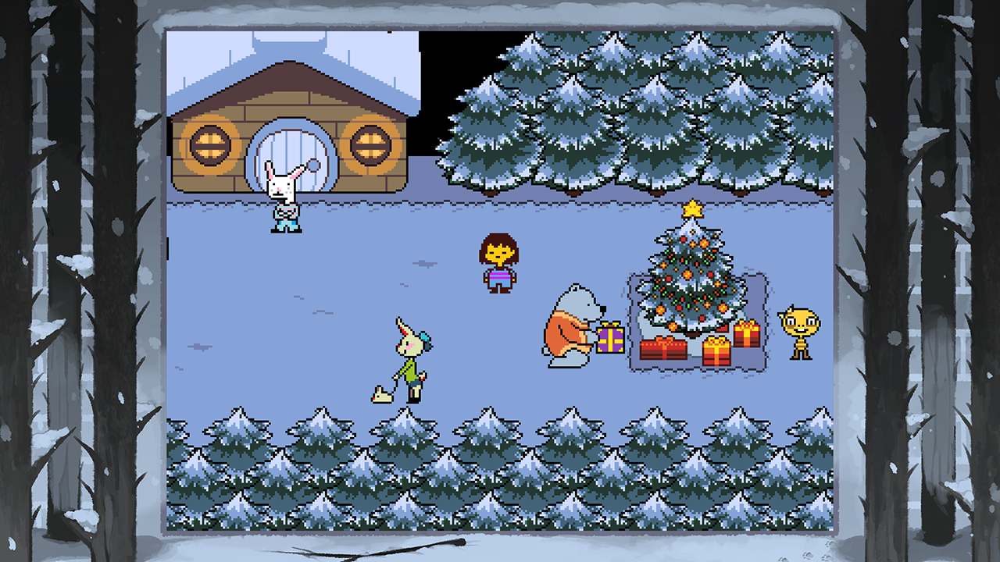
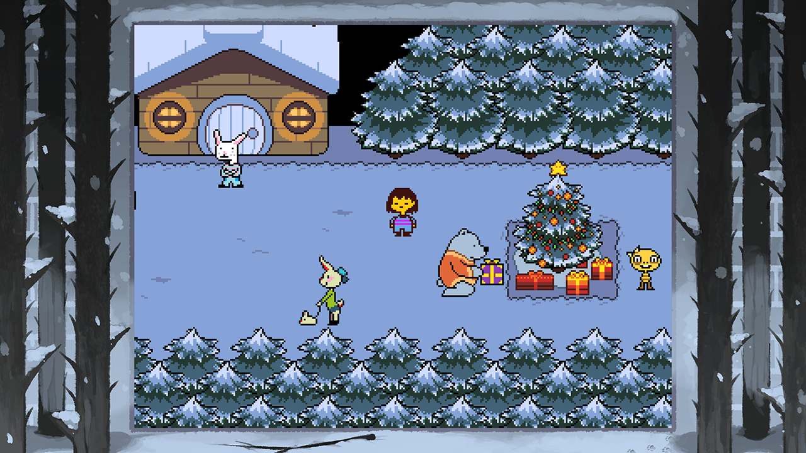
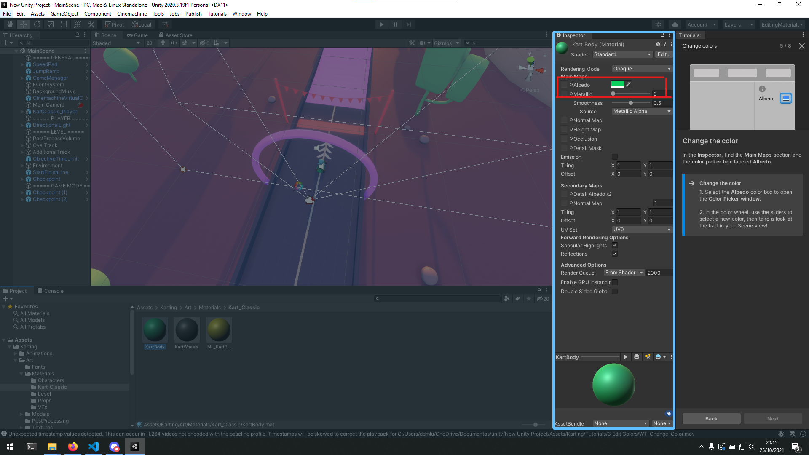

Sugestões do Docente para o caderno digital
1)Um dos jogos que, na minha opinião, se enquadra com os tópicos que foram pedidos em aula (viajar a um sítio novo, encarnar uma personagem diferente, fazer algo inacessível na vida real) é sem dúvida o Undertale. Undertale é um jogo que é muito focado na sua história, na qual começa com a nossa personagem a cair de uma toca para um mundo novo. O primeiro encontro que temos como personagem é uma florzita que tenta enganar o jogador e matá-lo. O jogo está cheio de monstros ridículos e ao contrário de outros RPG’s podemos lutar ou perdoare-los.
 

Um dos jogos meus jogos preferidos quando era mais novo, era sem sombra de duvidas (pun intended) o primeiro dishonored. Neste jogo narra a historia de Corvo, a nossa personagem principal, da qual foi culpado pelo assassinato da emperatriz. Como tal a personagem tem de tantar provar a sua inocencia neutralizando altas figuras do estado daquele mundo.
No ponto médio da historia, as figuras que estão a trabalhar com nosco acabam por nos dar double cross e subir ao poder, como tal a personagem tem de lidar com elas da forma que o jogador lhe vê como justa.
Unity
Durante o desenvolvimento em Unity, do primero kit, foi onde mexemos melhor com as ferramentas que a framework oferece. Tendo já algum conhecimento prévio da ferramenta em outras cadeiras, foi-me relativamente fácil compreender a parte da navegação em Unity. O primeiro kit com qual se trabalhou foi um jogo de Karts, simples, e seguimos o tutorial disponível pelo unity. A primeira etapa que foi feita, foi mudar a cor do Kart, onde simplesmente selecionávamos com um duplo click no componente ou através da “MainScene”. Com o objeto selecionado, podemos ir a pasta “Assets/Materials/Kart_Classic” do projeto e selecionar “KartBody”. Podemos alterar a cor deste asset no menu representado na imagem alterando o Albedo para o valor que pretendemos:
Por sequente, algo que também é fornecido pelo kit é a opção de podermos adicionar rampas a pista. Tornando o percurso mais customizavel, sendo que podemos encontrar o asset da rampa no seguinte caminho “Assets/Karting/Prefabs/Props”.

Por último a última, coisa que fiz com este kit sem entrar em level design, foi adicionar uma zona de turbo. Neste asset é possível a edição da velocidade que o kart ganha quando está a passar por aquela zona, é de notar que por muito engraçado que seja dar um valor absurdo a velocidade ganha pelo kart, muito facilmente é possível sair do collider da pista. Para adicionar este asset basta ir ao caminho “Assets/Mod Assets/Kart” e arrastar para a respetiva posição do mapa.

Primeiro projeto
Para o desenvolvimento deste projeto escolhi o game kit de fps do “corpo humano”, devido a previas dificuldades que estava a ter com o outro kit de fps das aulas, e pela simplicidade de criação de um nível.
O objetivo do jogo é tentar eliminar, todos os micróbios sem matar nenhum glóbulo vermelho, o layout do dos glóbulos e dos inimigos requere que o jogador tenha mais pontaria, e mais tarde no nível a posição dos Assets como os ossos e os dentes criam obstáculos no nível e fazem com que seja complicado acertar nos inimigos.
Na criação de níveis, tentei tornar o primeiro nível o mais linear possível, com a única dificuldade sendo os glóbulos os únicos obstáculos, e fazendo com que o jogador não possa usar as granadas para simplesmente passar o nível sem nenhuma penalização.
O segundo nível obriga o jogador a ir para certos locais do mapa e por sequente adiciona alguma verticalidade na sala do estomago, sendo que já começa a existir alguma dificuldade com os ossos.
No Terceiro e último nível, adicionei um inimigo novo e variantes novas, este nível requere alguma gestão da munição, e a submetralhadora teve um buff de dano causado aos inimigos, contudo o padrão de recoil ainda é bastante alto. O nível é bastante maior e continua a ideia do nível anterior.
Na personalização do nível fiz uso das do que o kit nos disponibilizava e segui a estética do exemplo. A utilização de veias, ossos gordura torna o nível mais interessante e pessoal. A medida que progredimos podemos observar que o “medico” está a operar em pacientes com uma saúde pior.
Como previamente referido o posicionamento dos ossos faz com que seja mais complicado matar certos inimigos, e incentiva até ao uso de certas ferramentas em alguns casos.
No último nível, adicionei três variedades diferente de inimigos. Um boss, dois inimigos maiores e com mais vida que servem como sub-bosses e um inimigo novo como mais vida que os inimigos habituais. Apesar de os inimigos não terem movimento, o facto de terem mais vida faz com que o jogador tenha de gastar mais munição.
O que pretendo melhorar
Neste kit os inimigos não tem mobilidade nenhuma, o que faz com que seja um pouco maçado pois podia ser mais desafiante. Mas por um lado um inimigo que esteja a atacar a personagem, neste tipo de jogo não faz muito sentido, pois o objetivo é o jogador ter boa pontaria e saber usar os recursos que tem sem ser penalizado e sem perder muito tempo.
Como tal o que pode tornar o jogo mais desfiante num proximo nivel ou no futuro, seria adicionar um script com um movimento "semi aleatorio" para as personagens, e tornar as personagens pequenas e com mais vida.
Não fiquei satisfeito com o tool de criação de niveis que o kit proporciona, porque é muito dificil se impossivel ligar certas zonas do mapa, acabando por ser um mapa bastante linear.
Outro problema que constatei no geral no unity é que o box colider, e o mesh collider não estão muito bem feitos para um jogador os usar como plataformas, porque obrigam o utilizador a saltar e depois ir para a frente,
não premitindo os dois.
Segundo Projeto
Para este projeto, aprendi a desenvolver assets, arte som e vídeo, para o nosso jogo.
Inicialmente ainda não era clara a ideia que o jogo ia seguir, então como tal fiz uma pesquisa de tecnologias multimédia para o projeto.
Inicialmente para fazer sprites, tentei usar um software chamado grafics gale: “https://graphicsgale.com/us/“, contudo durante o processo de utilização achei que era bastante mais complicado e menos intuitivo que outras ferramentas que estava mais confortável a usar “como photoshop”.
Photoshop, era uma escolha possível e viável, contudo para o que eu e o meu colega de grupo queríamos desenvolver era demasiada funcionalidade. E como tal acabei por encontrar o melhor dos dois mundos, na minha opinião, sendo isso o Aseprite: “https://www.aseprite.org/.”, o único problema do aseprite é que é pago e a versão trial não deixa exportar e guardar sprites. Por isso infelizmente, tive de arranjar uma versão pirateada do software.
Deixo aqui alguns exemplos de sprites feitos Aseprite:
Note-se que, no aseprite devemos sempre exportar os nossos sprites com uma resolução maior no que estamos a fazer (no caso de pixel art), porque depois em unity podemos ajustar o tamanho do para o que quisermos. O mesmo princípio que é dado com a ferramenta free transform do photoshop também se aplica aqui, ou seja, a qualidade de uma imagem diminui quando lhe aumentamos o tamanho, mas não quando o diminuímos.
Quando estamos a fazer animações em aseprite, chamo a atenção para uma técnica bastante útil principalmente se for para realizar uma animação num plano 2D (no meu caso utilizei animações bastante simples por isso não dei muito uso a esta técnica). Nunca devemos desenhar a personagem de uma forma simétrica e nunca a devemos colorir logo de início. Isto porque, nenhum ser humano ou animal é 100% simétrico e no segundo caso simplesmente porque é mais fácil de imaginar por cada frame o comportamento de uma personagem.
Alguns canais que me ajudaram a trabalhar com Aseprite:
"https://www.youtube.com/watch?v=tFsETEP01k8"
https://www.youtube.com/watch?v=UWWOdZ4uprs
https://www.youtube.com/watch?v=fCpalUPlhMs
O software que estávamos a tentar usar (e que, aconselho fortemente por ser grátis e fácil de usar) é o BoscaCeoil. Este programa tem uma serie de instrumentos com um som, bastante “retro” contudo, para o que o resultado final que queríamos não foi o esperado. Mas em suma, como a forma como este software funciona é a escolher para uma track, um instrumento, e agrupar uma serie de tracks para fazer música.
Este conceito é explicado em melhor detalhe por este canal do Youtube: "https://www.youtube.com/watch?v=fZeZ75gM9p4"